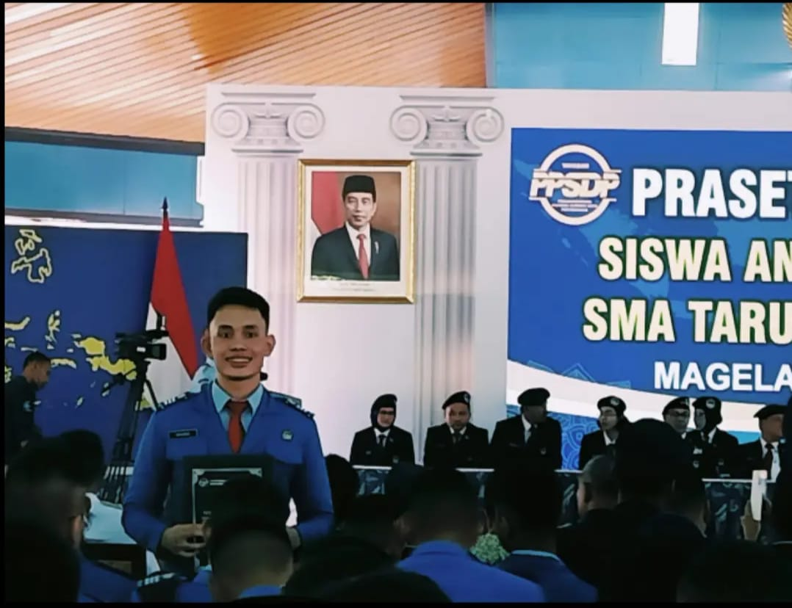

Profil
Salam kenal! Saya adalah Rafael Jonathan Raja Nicholas Harianja. Saat ini saya sedang berkuliah di Teknik Informatika Institut Teknologi Sepuluh Nopember. Saya terlahir di kota perjuangan, Surabaya dari keluarga batak pada 1 Februari 2005. Saya memiliki hobi bermusik dan olahraga. Saya saat ini sedang mengambil mata kuliah Pemrograman Web (F) yang diampuh oleh Ir. Misbakhul Munir Irfan Subakti, S.Kom., M.Sc., M.Phil. Saya ingin memaksimalkan tahun saya di kuliah membangun portofolio dan project terutama dibidang AI Engineering dan Cyber Security.